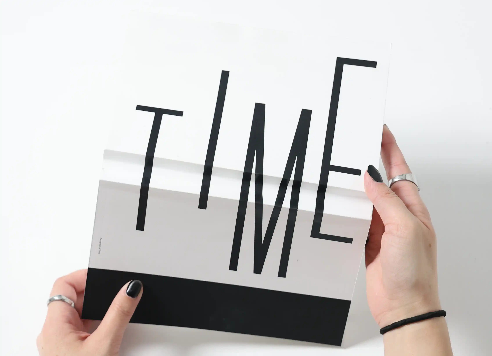
Time
Book - Promotional - Bookbinding - Motion
2023
This is a book on the perception of time. Sometimes an hour feels shorter than an hour and sometimes a week just seems to drag on forever. The duration of Time shifts throughout the year and changes depending on multiple factors. Time is a fluid state, so why should it always be measured in static measurements?
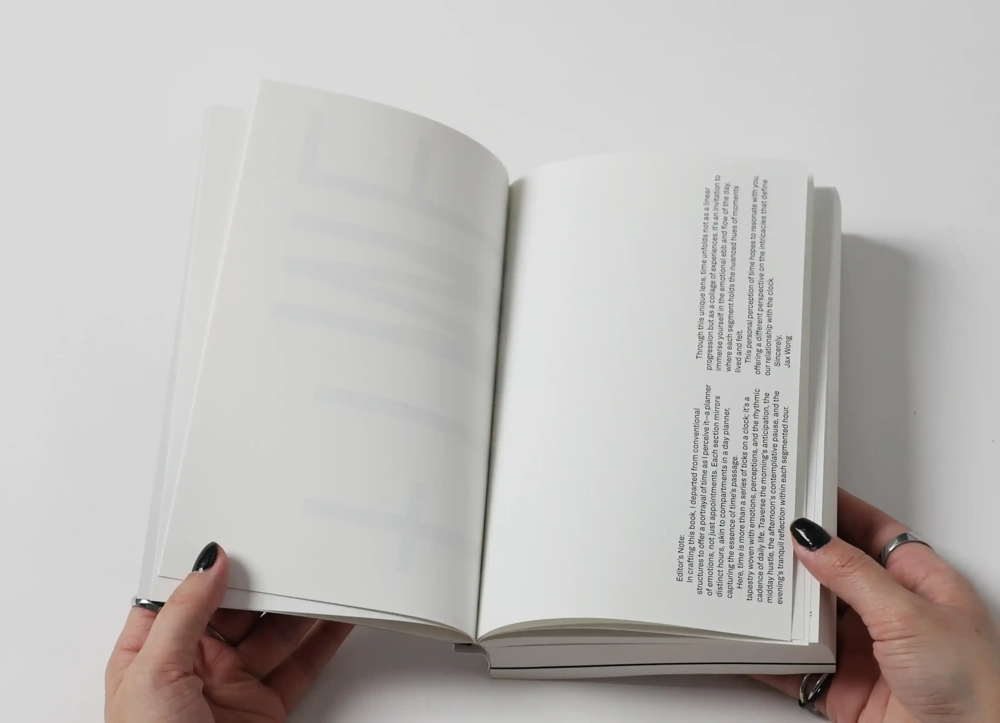
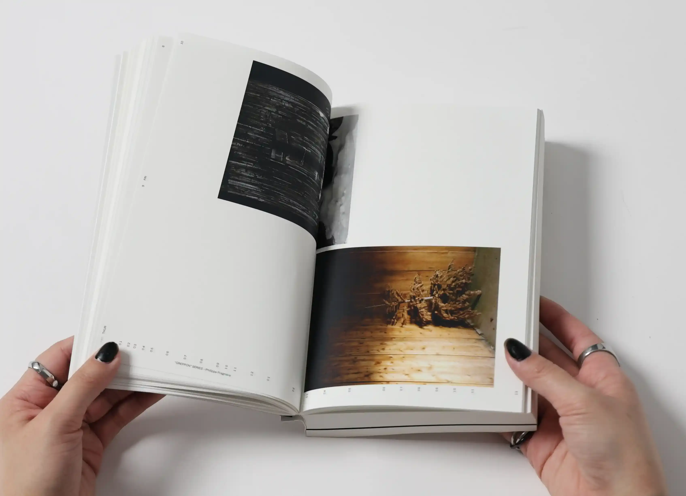
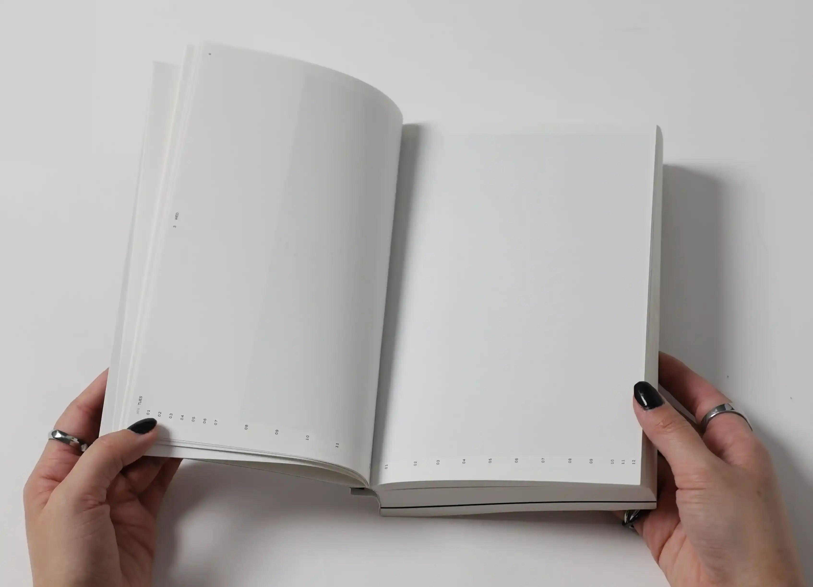
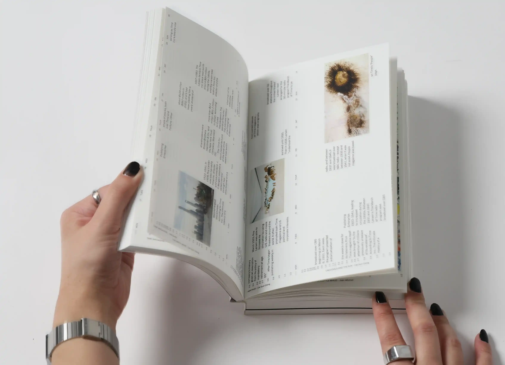
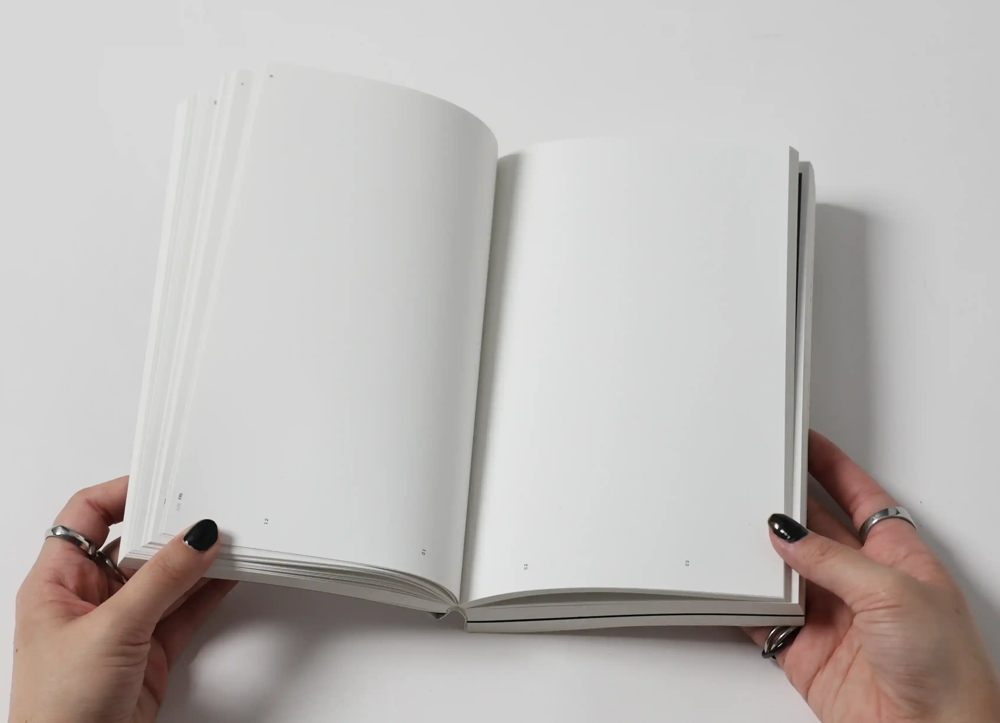
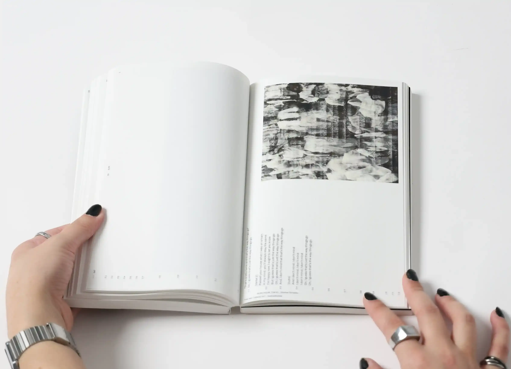
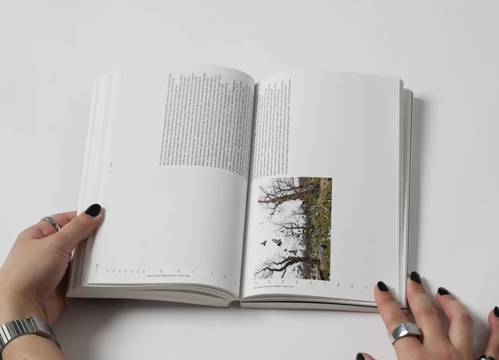
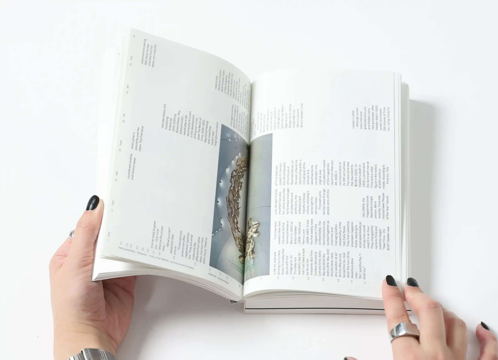
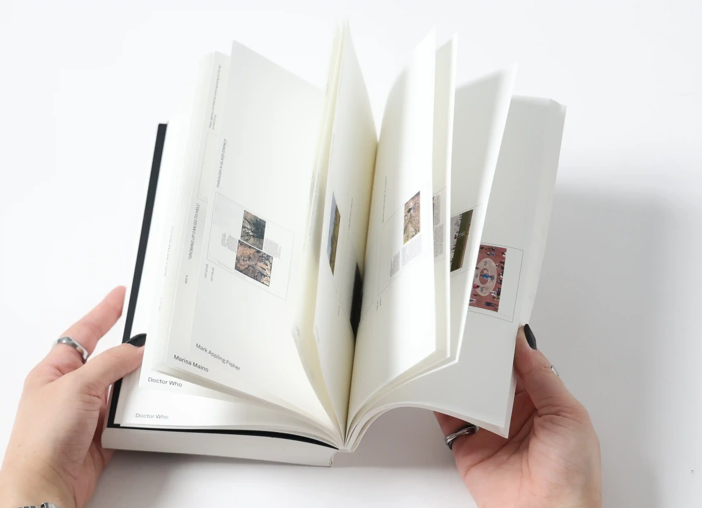
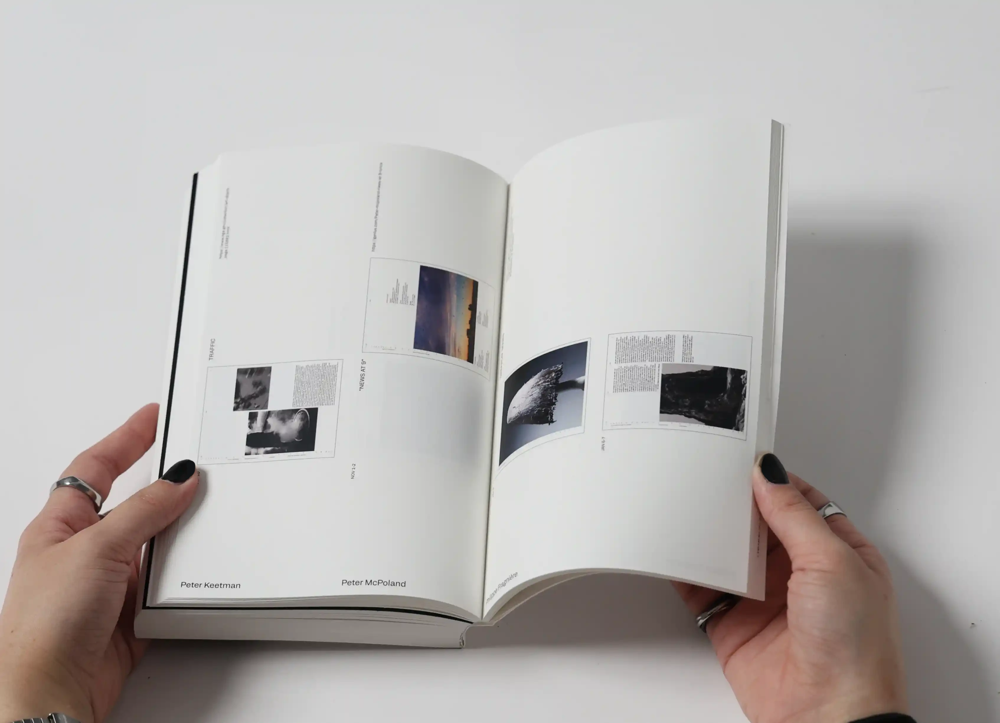
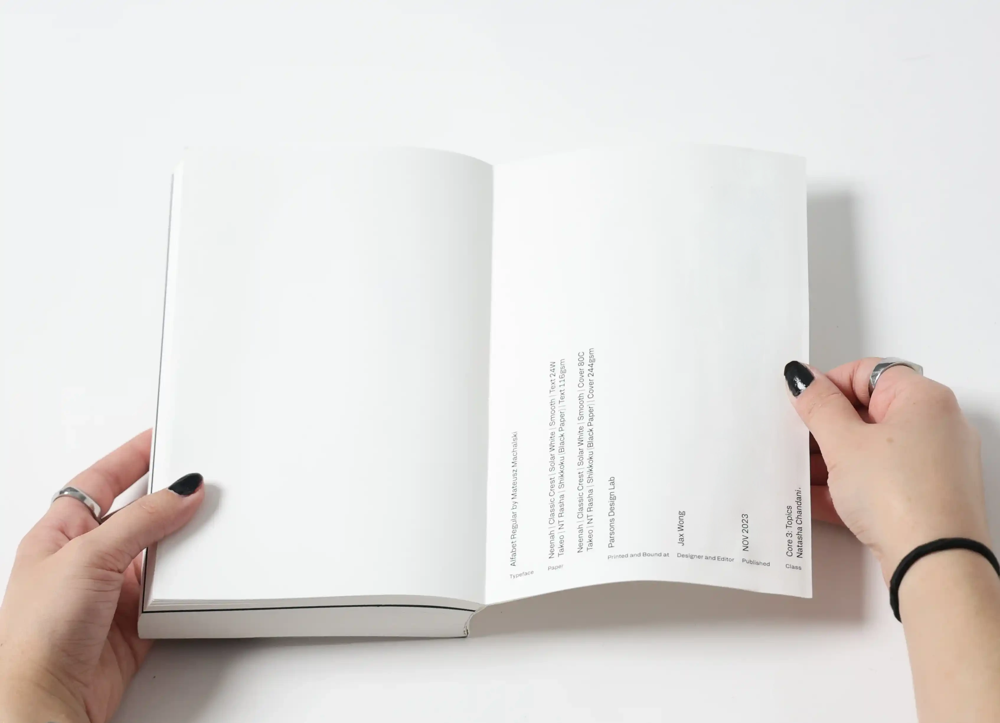
All of the content gathered and displayed in the book has some relation to time and its passing.
The hours of the day on the bottom of the spreads change depending on how long those hours felt.
On the left axis is the date, so if more days fill the spread from top to bottom then they went by quicker, and vice versa.
There are several instances of a day taking up to three spreads long, and one instance of three weeks being cramped into one spread.
Wherever there is text and images are the times that I was occupied and how busy I felt.
At the time of designing, 2023 was not over yet, so the black pages with their rigid grid structure signify the unknown of the future, a place we have not ventured into yet.

Promotional Video: